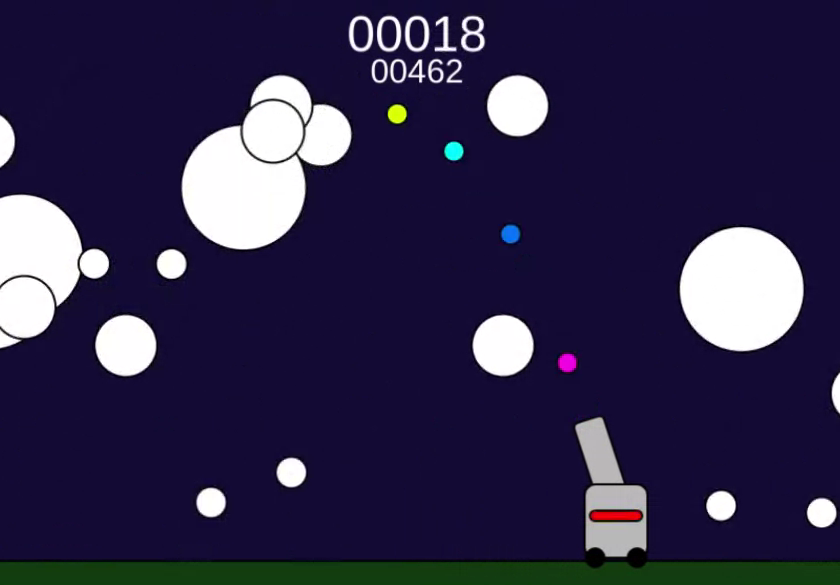
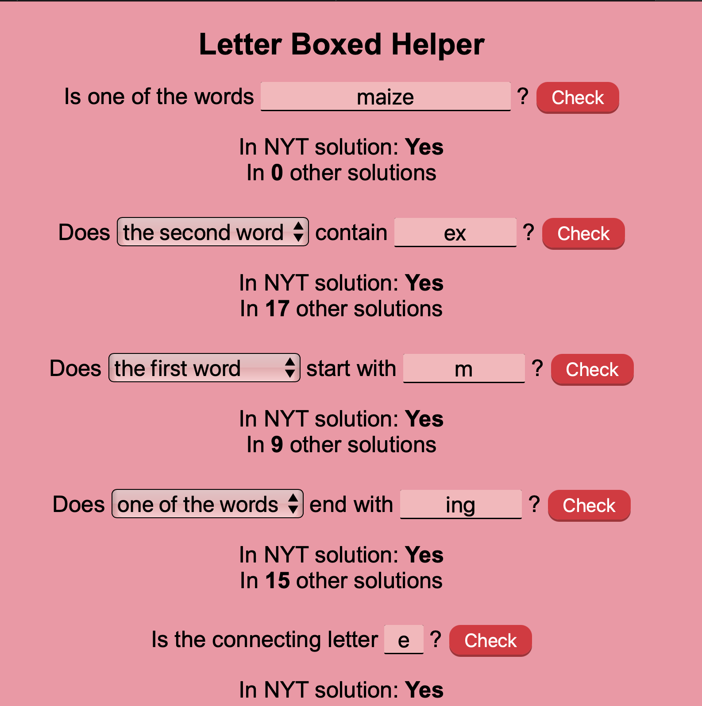

Lean And Clean With Celeen
For my school's internship program, I was able to create a website for a local business.
Although Shopify's drag-and-drop editor meant that many sections were premade, there was still a lot of programming
involved, such as adding specific customizations and a weekly rotation of meals. Surprisingly, some of the most time-consuming parts of the project
were putting two products side by side and adding the ability to see all of a product's images.
Send me an email if you would like to see the code!
Made with Shopify Liquid.
https://leanandcleanwithceleen.myshopify.com
Metaphors
My final project for AP Literature, this is an analysis of the poem "Metaphors"
by Sylvia Plath. I aimed for a direct yet cryptic vibe similar to that of the original
poem. I was able to create a cool hover effect through the use of CSS masking.
Made with HTML, CSS, and Javascript.
Website |
Github Repo
Cannon Chaos

This is a small, arcade style cannon game I created to simulate projectile motion. It's
difficult, fast paced, and very fun. It is the most complicated project I
have made using the Javascript canvas so far, and gave me more experience in using classes.
There's no sound, but I might add it at some point.
Controls are in the repository.
Made with HTML, CSS, and Javascript.
Website |
Github Repo
Audio Visualizer
Using the Javascript Audio API, this project graphs the time and frequency data of a song.
Two sample songs are provided, but songs stored locally can be played as well.
It wasn't that hard to create the project, but an elusive bug, which prevented the audio from playing,
took days to fix.
Made with HTML, CSS, and Javascript.
Website |
Github Repo
Letter Boxed Helper

This is a hint provider for the NYT game
Letter Boxed. You can test for individual words, parts of words, word lengths, and
reveal all possible solutions.
It is my first project with both a frontend and a backend,
since a backend is needed to fetch the official answer and word list.
Made with Node.js, and hosted on Netlify.
Website:
letterboxed-helper.netlify.app
Github Repository:
https://github.com/Jocowl25/Letterboxed-helper
Number Syllable Counter
The combination of a random idea I had one day and the desire to learn Python led to the creation of this project. The program counts how many syllables it takes to say a number out loud; for example, 7 is two syllables, and 345 is six syllables. It can also make a graph of how the syllables change over time. My favorite part is, due to the rules of how numbers are pronounced, the program can accept numbers up to undecillion—that's 36 zeros!
Made with Python.
https://github.com/Jocowl25/Number-Syllable-Counter
Scrong

This is a small pong game where the game scrolls up and down when the paddle moves up and down. The ball gets faster and the color changes after every bounce. It's difficult, yet very fun, and has mobile support. The combination of these factors make the game surprisingly addicting.
Made with HTML, CSS, and Javascript.
https://codepen.io/Jocowl/full/eYarzrj
Writing Portfolio

This is a small website of stories and poems I wrote. Not that much code to see here, but it's worth a look if you like reading. For something so small it has a surprising amount of CSS.
Made With HTML, CSS, and Javascript.
https://codepen.io/Jocowl/full/MWdJqmd
Heart-dle

A heart shaped clone of the waffle word game, this also features a famous singer and band. It was my first time using objects in a larger project, and I'm very happy with my replication. At some point I want to add random word generation.
Made with HTML, CSS, and Javascript.
https://codepen.io/Jocowl/full/abxxQLW
Light Metronome

Have you ever listened to a song while seeing a light blink or hearing a noise just out of sync with the music? That's what the Light Metronome is for! If you tap to the beat of the song, the light continues to flash at that rate. The BPM can also be set manually. While the program seems simple in concept, it was actually somewhat difficult to make. I'm very proud of it, though—especially the menu.
Made with HTML, CSS, and Javascript.
https://codepen.io/Jocowl/full/zYXOMKd
Punnett Square Generator

A Punnett Square is a biology table used to illustrate all the possible outcomes of a genetic cross. This program generates one with a theoretically infinite number of different traits that can be crossed at the same time. However, after about eleven different traits the number of combinations is so large that the program freezes. Other Punnett Square generators never go higher than five, though, so I'm happy with the results.
Made with HTML, CSS, and Javascript.
https://codepen.io/Jocowl/full/yLweJKP
Planets

Inspired by this creation, this project features the planets of the solar system orbiting the sun. Although the orbits are faster than in real time, they are still accurate relative to each other. It is very relaxing to watch.
Made with HTML, CSS, and Javascript.
Original version:
https://codepen.io/Jocowl/full/GRzbbMY
Version with custom orbits:
https://codepen.io/Jocowl/full/eYXOYod
Bad Apple Generator
Based on an internet trend from the 2010s, this recreates the Bad Apple Youtube video out of the user's letters of choice. I used a separate program to create data for each frame of the video, which is stored in this program to recreate the frames with characters. I recommend inputting emojis-it looks very cool.
Made with HTML, CSS, and p5.js.
https://editor.p5js.org/jocowl25/full/jFSNRb_1L
This Website
You already know what this is. This was my first time animating with CSS and I think it looks pretty cool. After 000Webhost stopped hosting the website for free, I moved the page to Github. It's had many updates over the years! The photo here is one of the first versions.
Made with HTML, CSS, and Javascript.
https://github.com/Jocowl25/Jocowl25.github.io
Random Scratch Project (v2)

Scratch is a children's website for block-based coding. Since Scratch has no "random project" button, I made one myself. This is an improved version of one I made in 2022; this time it uses fetch and is actually automatic. If you like Scratch and you're bored, give this a try.
Made with HTML, CSS, and Javascript.
https://js.do/jocowl/715403
Line Bouncing In A Square/Box

You know when the DVD logo bounces around on a screen until it reaches the corner? This is a version of the path a line would take when doing that. The rectangle it bounces in is resizeable, and I made a 3D version, where the line bounces inside a box.
Made with p5.js.
2D version:
https://editor.p5js.org/jocowl25/full/Jl7qkOInW
3D version:
https://editor.p5js.org/jocowl25/full/ZtzgUc9ps
Rock Paper Scissors
A simple Rock Paper Scissors game against a computer, with a display for the probability of getting to that point. Inspired by a CGP Grey video, this was the first Javascript program I made without p5.js.
Made with HTML, CSS, and Javascript.
https://js.do/jocowl/715827
Blackjack

This started as just a basic, console based Blackjack game to learn Java. However, over the next few months I added more features, including betting modes and a high score system. Since Replit now prevents projects from running without an account, use the Javascript port below to actually play.
Originally made with Java.
Original:
https://github.com/Jocowl25/Blackjack
Javascript Port:
https://codepen.io/Jocowl/full/MWdypYJ
Weaver but Different

Weaver is a spinoff of Wordle where you change a word by one letter each turn to get to the goal word. This is like that, but you only have a limited number of turns. It's guaranteed to always have a possible board.
Made with p5.js.
https://editor.p5js.org/jocowl25/full/WVTKVum9v
Grapher

This is a graphing calculator with an input for one equation and an adjustable zoom. It was harder to make than I thought; I ended up having to recreate PEMDAS manually due to the input being a string. Although this was harder than I thought it would be, it was very rewarding.
Made with p5.js.
https://editor.p5js.org/jocowl25/full/Y3oCqWg1x
Random Scratch URL (v1)

This was my first attempt at a "Random Scratch Project" Button. Couldn't find an API to use fetch with (that didn't have CORS security), so it isn't that good or even automatic. It was what finally got me into real coding, though, so it has a special place in my heart.
Made with p5.js.
https://editor.p5js.org/jocowl25/full/QEqZ-2LDH
Scratch
If you haven't heard about it before, Scratch is a website designed for teaching children coding concepts through premade blocks. I made a lot of projects on here before getting into real coding. Links to my profiles are below.
https://scratch.mit.edu/users/TumbleBee55/
https://scratch.mit.edu/users/TumbleWasp55/